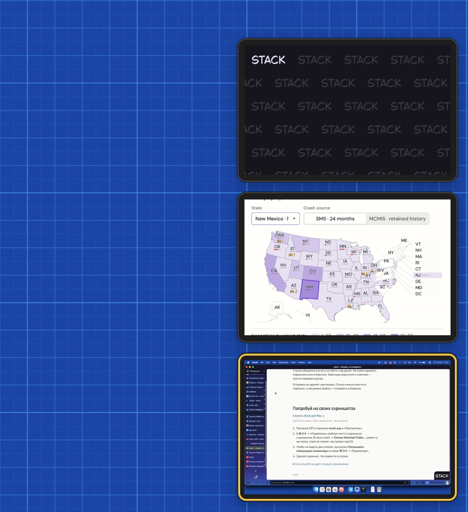

Скриншоты под рукой.
stack собирает скриншоты и записи экрана в углу Mac. Выбери нужные и перетащи в чат — без поиска файлов.
macOS 14+ · Intel и Apple silicon
Снимай как обычно
Делай скриншоты и записывай экран средствами macOS. stack соберёт новые файлы из выбранной папки в одну стопку.
Отправь всё нужное
Выбери снимки и видео, затем перетащи их в чат. Они прикрепятся отдельными файлами — без склейки и перекодирования.

- ⌘ + клик
- Добавить файл к выбору
- ⇧ + клик
- Выбрать диапазон
- Пробел
- Посмотреть снимок или видео
- ⌘C
- Скопировать выбранные файлы
История сохраняется после перезапуска. Отправка не удаляет исходные файлы.
Смотри, что сделал ИИ
Скриншоты и видео от агента появляются в другом углу. Проекты не смешиваются: у каждого своя история.

- В окне первого запуска нажми кнопку Copy Instructions for AI.
- Вставь инструкцию агенту и попроси показать результат скриншотом или видео.
Агенту нужен доступ к локальным файлам на твоём Mac.
Куда агент сохраняет файлы
В ~/Pictures/stack/AI, в подпапку проекта. stack создаёт общую папку сам. Изменить её можно в Settings… → AI capture folder → Change…; затем скопируй инструкцию заново.
Попробуй на следующем снимке
macOS 14+ · Intel и Apple silicon. Сборка без нотарификации Apple.
- Распакуй ZIP, перенеси stack.app в «Программы» и запусти.
- В приложении «Снимок экрана» открой «Параметры» и выбери папку для снимков и записей. Укажи её же в меню stack → Settings… → Watched folder → Change….
- Сделай новый снимок — он появится в стопке.
Только материалы от ИИ? Выбирать папку не нужно — подключи агента.
macOS блокирует запуск?
После первой попытки запуска открой «Системные настройки → Конфиденциальность и безопасность» → «Всё равно открыть» (Open Anyway). Разрешай запуск только сборки, источнику которой доверяешь.
Появляются две миниатюры?
В приложении «Снимок экрана» открой «Параметры» и выключи «Показывать плавающую миниатюру». Останется превью stack.